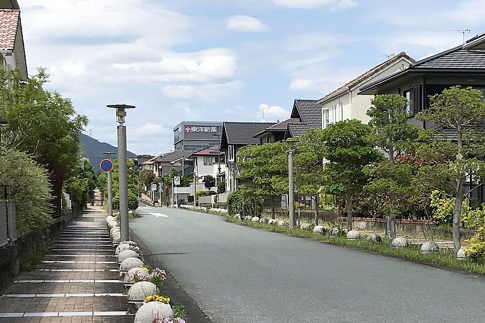

トップ › 社会人お得技ノート
社会人お得技ノート⑦ 住まい・金融・福利厚生
- 調査日:
- 更新日:
- 社会人お得技ノート 7/8
要点まとめ
- 住宅ローン控除は2030年末入居まで延長。子育て・若者夫婦世帯は借入限度額の上乗せも継続[1]
- 離職・減収で家賃に困ったら「住居確保給付金」。家賃相当額を原則3か月（最長9か月）支給[2]
- 個人向け国債・変動10年の2026年10月募集分は初回利率年2.05%。半年ごとに見直し[3]
- 勤務先が奨学金を直接返す「代理返還」は4,852社が利用（2026年3月末）[4]

住宅街（佐賀県鳥栖市）
ラベル: 新制度・改正 改悪・注意 終了
住まい
新制度・改正 住宅ローン控除が2030年末入居まで延長（2026年度改正）
入居期限が2030年12月31日まで延長、控除率は0.7%[1]
くわしく
- 新築の認定住宅の借入限度額は4,500万円（子育て世帯・若者夫婦世帯は5,000万円）[1][5]
- 子育て世帯等は「19歳未満の子を有する世帯」か「夫婦のいずれかが40歳未満の世帯」[1][5]
- 既存住宅も、認定住宅・ZEH水準・省エネ基準適合住宅は控除期間が13年に[1][5]
- 所得要件は2,000万円以下[1][5]
東京ゼロエミポイント：省エネ家電の買い替えで最大8万円値引き
都内で対象の省エネ家電を買うと、参加店のレジで1ポイント＝1円値引き[6]
くわしく
- 対象の購入期間は2027年3月31日まで。予算がなくなり次第終了[6][7]
- 製造から15年以上たったエアコン・冷蔵庫からの買い替えは上乗せあり[6]
- 最大8万円は、大型冷蔵庫の長期使用品からの買い替えなどが対象[6]
- 他の自治体にも同様の補助があり、予算に達すると受付期間中でも終わることがある（筆者の見解）
結婚新生活支援：夫婦とも29歳以下なら最大60万円
新婚世帯の住居費や引越費用を、市町村が補助する制度[8]
くわしく
- 対象は婚姻日に夫婦とも39歳以下・世帯所得500万円未満の新婚世帯[8][9]
- 上限は夫婦とも29歳以下で60万円、それ以外は30万円[8][9]
- 実施していない市町村もある。条件も異なるため、住んでいる自治体で確認が必要
住居確保給付金：離職・減収時に家賃相当額を支給
家賃額を原則3か月（最長9か月）支給[2]
くわしく
- 対象は離職・廃業から2年以内の人や、本人の責任によらない休業等で収入が減った人[2]
- 収入・資産の基準を満たし、求職活動をすることが条件[2]
- 原則として自治体が貸主に直接支払う[2]
- 上限額は地域で異なり、東京23区（板橋区の案内）では単身53,700円[10]
UR賃貸：礼金・仲介手数料など不要、「近居割」で家賃5%引き
UR賃貸住宅は礼金・仲介手数料・更新料・保証人がすべて不要[11]
くわしく
- 近居割の対象は、子育て世帯・高齢者世帯などとその親族世帯[12]
- 2つの世帯が同じ団地か、半径2km以内のUR団地に住む場合に適用[12]
- 新たに入居した世帯の家賃が5年間5%減額[12]
- 2031年3月31日までの新規入居が対象[12]
賃貸の仲介手数料は、借主からは原則0.55か月分（税込）まで
居住用賃貸の仲介手数料は一方から原則家賃の0.55か月分（税込）まで[13]
くわしく
- 依頼の時点で承諾を得ていれば、0.55か月分を超えられる[13]
- ただし貸主・借主の合計は1.1か月分以内[13]
- 国交省のガイドラインでは、経年変化や通常の使用による損耗の修繕費は家賃に含まれる[14]
- 借主が負担するのは通常の使用を超える損耗[14]
- このガイドラインは法的拘束力のない一般的な基準[14]
改悪・注意 火災保険は更新前に補償内容と改定を確認
住宅総合保険の参考純率は2023年6月に全国平均13.0%引き上げ[15]
くわしく
- 改定したのは損害保険料率算出機構。水災の料率も市区町村別に5区分に細分化[15][16]
- 参考純率と各社の実際の改定率は異なる[15][16]
- 保険会社によっては2026年10月以降始期の契約から商品改定（例：東京海上日動）[17]
- 更新前に、各社の案内で保険料と補償内容を確認
預金・国債
個人向け国債・変動10年：10月募集分の初回利率は年2.05%
初回の適用利率は年2.05%（税引前）、半年ごとに見直し[3]
くわしく
- 2026年10月募集分は第199回債で、発行日は11月16日[18][3]
- 利率は「基準金利×0.66」で、下限は0.05%[18][3]
- 発行から1年経過後は中途換金できる[3]
- 中途換金では直前2回分の利子（税引前）×0.79685が差し引かれる[3]
ネット銀行の金利・ランク制度の変更
住信SBIネット銀行は2026年8月3日付で商号変更[19]
くわしく
- 新しい商号は「ドコモSMTBネット銀行」[19]
- スマートプログラムは2026年5月1日から5段階のランク制に改定[20]
- ATM・振込の無料回数なども変わっている[20]
- 楽天銀行は、マネーブリッジ（楽天証券との口座連携）で普通預金金利が優遇される[21]
- 優遇金利は2026年11月3日時点で最大年0.58%（税引前）[21]
- 優遇金利が付く残高には上限がある[21]
- 金利は頻繁に変わる
勤務先・公的な支援
奨学金の「代理返還」：勤務先が奨学金を直接返済
利用企業は4,852社（2026年3月末時点）[4]
くわしく
- 企業が従業員の奨学金を、日本学生支援機構（JASSO）に直接送金する制度[4]
- 直接送金で返還であることが明確な場合、従業員側は所得税が非課税になり得る[4]
- 47都道府県すべてが何らかの奨学金返還支援を実施（2025年6月1日時点）[22]
- 東京都は、建設・IT・ものづくり分野の都内中小企業に技術者として就職する人の返還を支援[23]
- 東京都の登録者募集は2027年3月12日まで[23]
個人で入れる優待サービス（例：デイリーPlus 月額550円）
LINEヤフーの「デイリーPlus」は月額550円（税込）[24]
くわしく
- 会員制の優待サービスで、個人でも加入できる[24]
- 登録した月は無料、翌月から課金[24]
- 過去に特典を使った人などは、登録月無料の対象外[24]
- 勤務先や労働組合が福利厚生サービスを導入しているなら、まずそちらを確認
法テラスの無料法律相談：同じ問題で3回まで
収入・資産が基準以下なら、同じ問題で3回まで無料で相談できる[25]
くわしく
- 相談時間は1回30分[25][26]
- 東京都特別区・大阪市などの基準は、単身で手取り月収200,200円以下・資産180万円以下[25][26]
- 住んでいる区市町村でも、無料の法律相談を行っている場合がある
今回確認できなかった点
- 百貨店友の会の積立ボーナス、ヒルトンのステータスマッチ、団体長期障害所得補償保険（GLTD）、ベネフィット・ワン個人版の入会金は、公式情報を確認できなかったため掲載していません。
出典（26件）
閲覧日はいずれも2026年11月1日
- 住宅ローン減税（国土交通省）
- 住居確保給付金のご案内（リーフレット）（厚生労働省）
- 個人向け国債 変動10年 第199回債（財務省）
- 企業等の奨学金返還支援（代理返還）制度（日本学生支援機構（JASSO））
- 令和8年度税制改正概要（国土交通省）
- 事業概要（東京ゼロエミポイント（東京都））
- 東京ゼロエミポイント 新規高効率家電等購入支援事業の延長（2026年2月）（東京都）
- 地域少子化対策重点推進交付金 実施要領（令和7年度）（こども家庭庁）
- 令和8年度 結婚新生活支援連携推進補助金（新潟県）
- 住居確保給付金のご案内（2026年7月版）（板橋区）
- UR賃貸住宅とは（UR都市機構）
- 近居割（UR都市機構）
- 消費者の皆様向け 不動産取引に関するお知らせ（国土交通省）
- 「原状回復をめぐるトラブルとガイドライン」について（国土交通省）
- 火災保険参考純率 改定のご案内（2023年6月28日）（損害保険料率算出機構）
- 火災保険参考純率（損害保険料率算出機構）
- 住まいの保険 商品改定のご案内（東京海上日動火災保険）
- 個人向け国債の発行条件等（令和8年10月7日）（財務省）
- 商号変更のお知らせ（ドコモSMTBネット銀行）
- 「スマートプログラム」改定のお知らせ（2025年11月7日）（住信SBIネット銀行（現ドコモSMTBネット銀行））
- マネーブリッジ（楽天証券）
- 地方公共団体における奨学金返還支援取組状況（令和7年6月1日時点）（内閣官房 地域未来戦略本部事務局）
- 令和8年度 中小企業人材確保のための奨学金返還支援事業 登録者募集（東京都）
- デイリーPlus ご利用ガイド（LINEヤフー）
- 無料法律相談のご利用の流れ（法テラス（日本司法支援センター））
- 無料法律相談に関するよくあるご質問（法テラス（日本司法支援センター））
写真・画像の出典（1件）
- 住宅街（佐賀県鳥栖市）
写真: Peka／Wikimedia Commons（CC BY-SA 4.0）